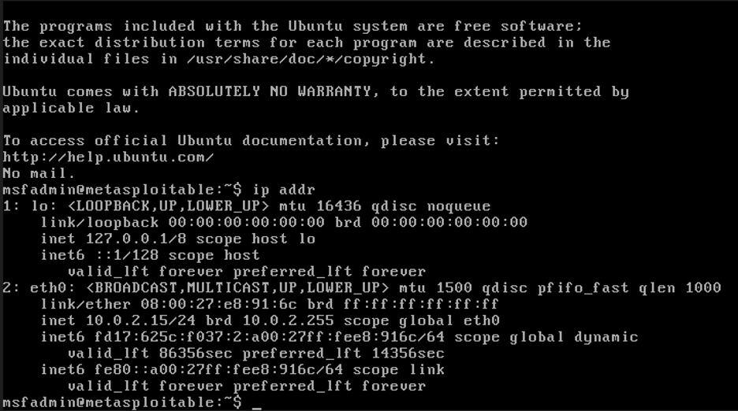
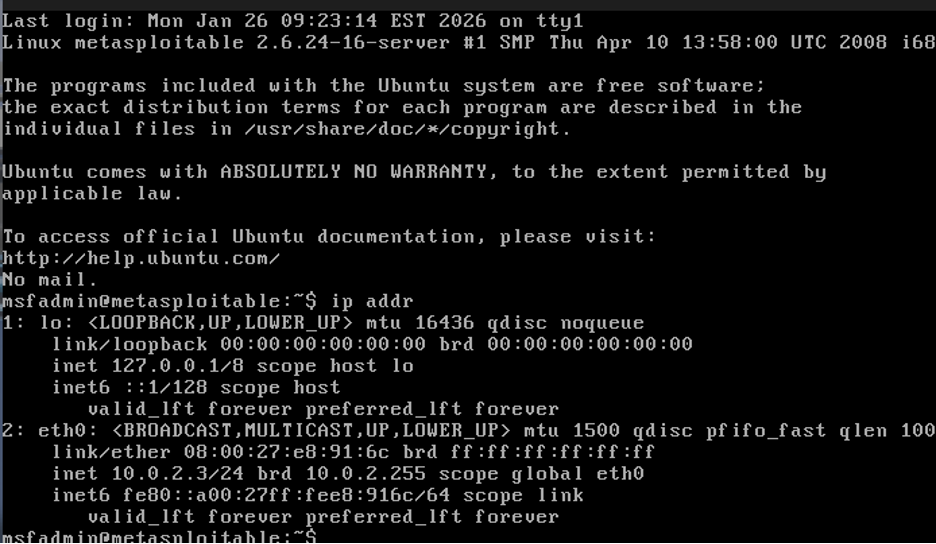
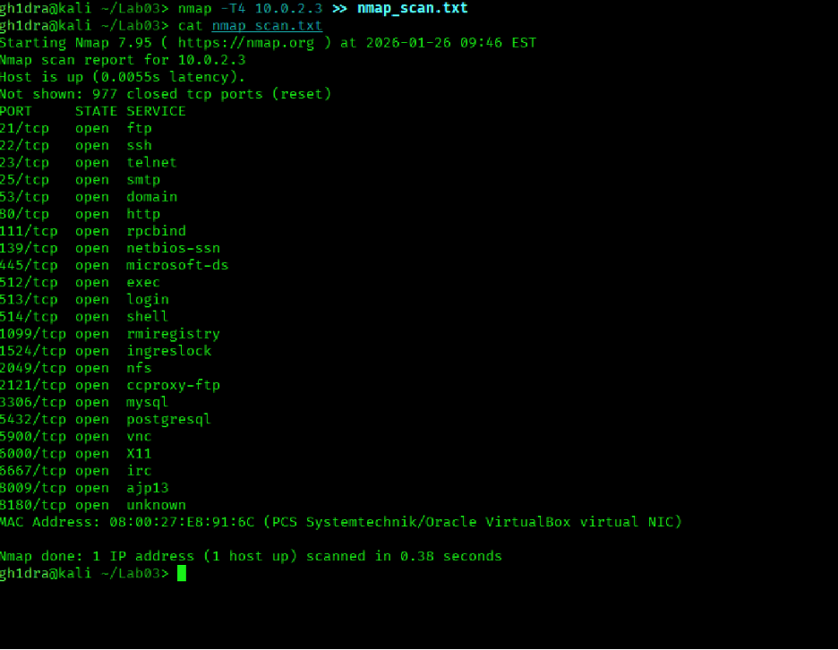
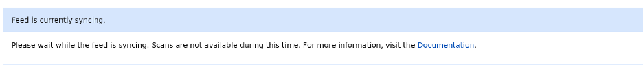
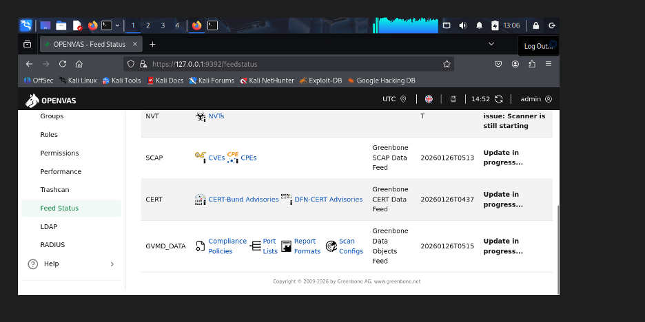
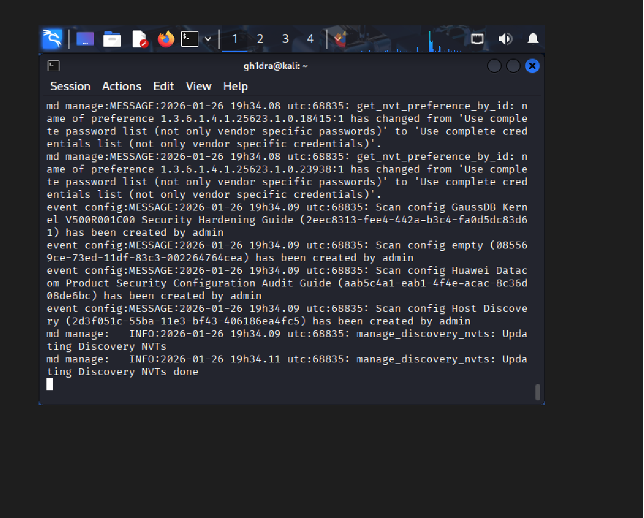
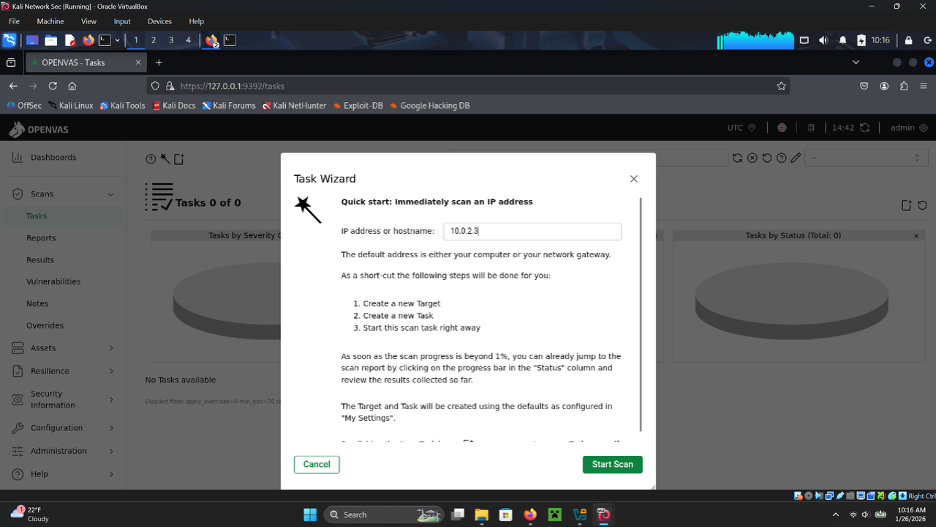
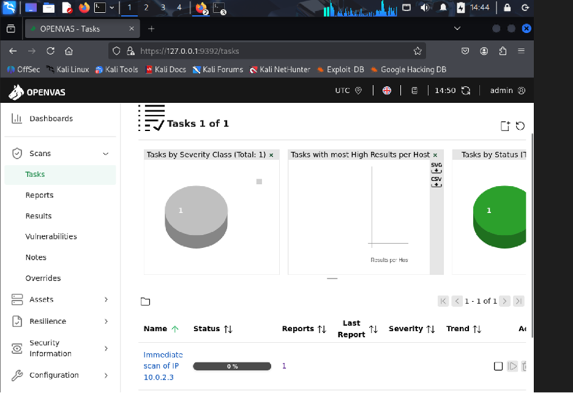
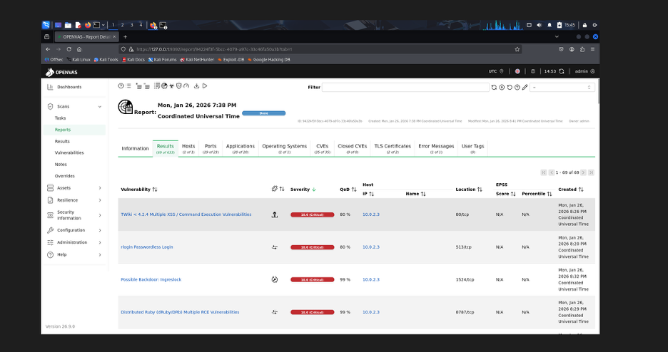

01
VM Setup & Addressing
We started by installing the Metasploitable VM. A new Kali install was not required for the
target—attaching the .vmdk to a new VirtualBox machine without a setup ISO was
enough.
An initial ip addr on Metasploitable showed 10.0.2.15. That address
did not remain usable for scanning from Kali, so a new NAT network was created and attached
to both the Metasploitable and Kali VMs. After that change, the Metasploitable host used for
Nmap and OpenVAS was 10.0.2.3.

ip addr.
eth0 at 10.0.2.3/24.02
Nmap Port Discovery
From Kali, an Nmap scan was run against the Metasploitable host with
-T4 (aggressive timing). That is acceptable only because this was an owned lab
target; the same scan against an unauthorized network can create legal and employment risk.
Timing templates such as -T0 are quieter when lower noise matters.
The scan returned a long list of open ports. At a glance, services such as SSH, MySQL, HTTP, FTP, and others were exposed—typical of Metasploitable’s intentionally weak surface.

10.0.2.3 saved to
nmap_scan.txt.03
OpenVAS Installation & Feed Sync
After the Nmap pass, OpenVAS (Greenbone Vulnerability Management) and its dependencies were installed on Kali. Generated admin credentials were saved locally for lab use (not archived on this site).
The vulnerability feed stuck on syncing. Kali was reinstalled with 4 GB of RAM instead of 2 GB. Logs were checked to confirm updates were progressing; the sync took about 35–40 minutes before scans were available again.



04
OpenVAS Scan
With feeds ready, a task was started against 10.0.2.3 from the Greenbone web UI
(https://127.0.0.1:9392). The scan ran for about half an hour before completing.

10.0.2.3.

10.0.2.3.Full report PDF:
report-94224f3f-5bcc-4079-a97c-33c46fa50a3b.pdf
05
Capabilities of Tools Used
Nmap is useful for discovering open ports on systems you are authorized to assess—including
your own lab or a company network under an approved engagement. Timing templates trade speed
for noise; aggressive options such as -T4 fit owned lab targets, while quieter
options reduce disruption when that is required. Unauthorized scanning of networks you do
not control can have legal and professional consequences.
OpenVAS / Greenbone can monitor systems and networks for known weaknesses. Reports summarize findings by severity, call out affected ports, reference CVEs, and often suggest remediation paths for further research and fixes.
06
Findings
The Metasploitable host is running an end-of-life Ubuntu 8.04 image. The OpenVAS report surfaced a large set of issues—on the order of 69 findings in the summarized view, including critical and high-severity items.
| Severity | Count | Key risks |
|---|---|---|
| Critical | 14 | Remote code execution, backdoors, passwordless logins |
| High | 9 | Brute-force success, unencrypted cleartext logins |
| Medium | 40 | Outdated software (Samba, PHP, TWiki), weak SSL/TLS |
| Low | 6 | Information disclosure (TCP/ICMP timestamps) |
Among the critical issues, remote code execution stands out because it can let an attacker compromise the system without physical access. Passwordless login paths can yield root-level control and exposure of system files. Default MySQL credentials are especially serious if a database holds account data. Port 80 (HTTP) findings included cross-site scripting risk, which can lead to cookie theft and page compromise.
In the high category, successful FTP login with weak credentials shows how weak authentication can grant access to sensitive content with little resistance. Medium findings included anonymous FTP on port 21, which allows access without credentials.
These examples are only a sample. The OpenVAS report documents many additional findings, how they were detected, and suggested remediation directions.